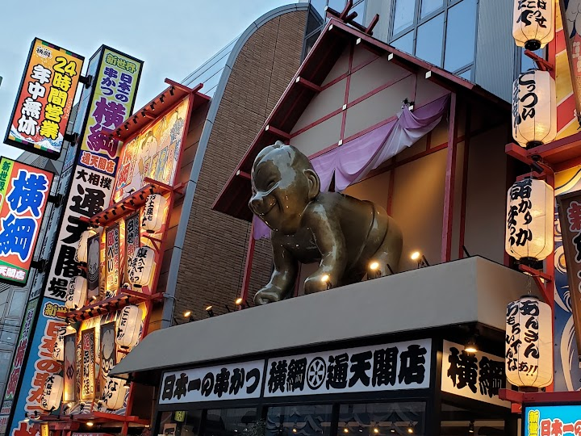
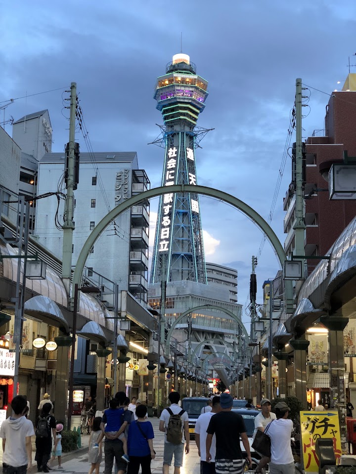
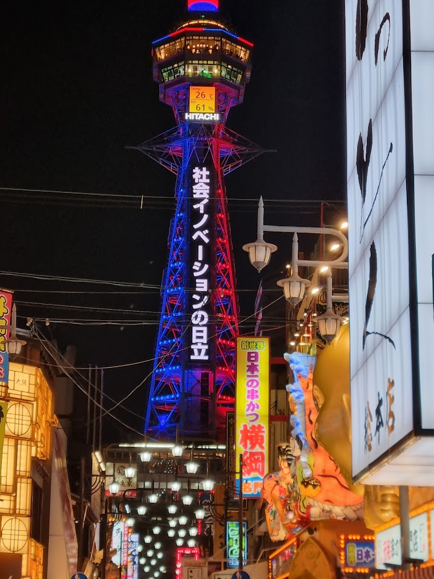
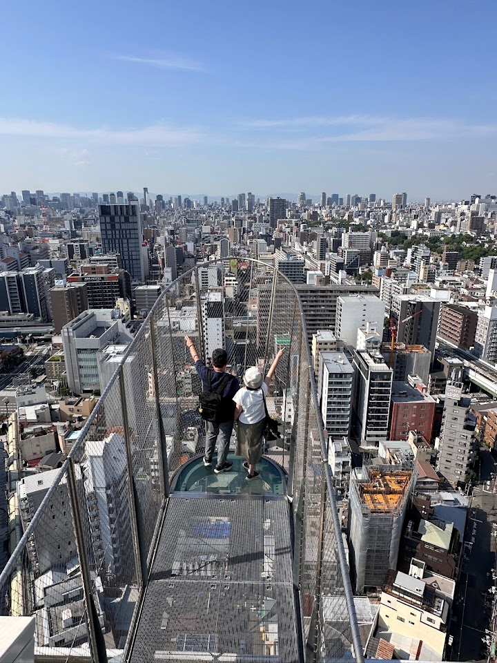
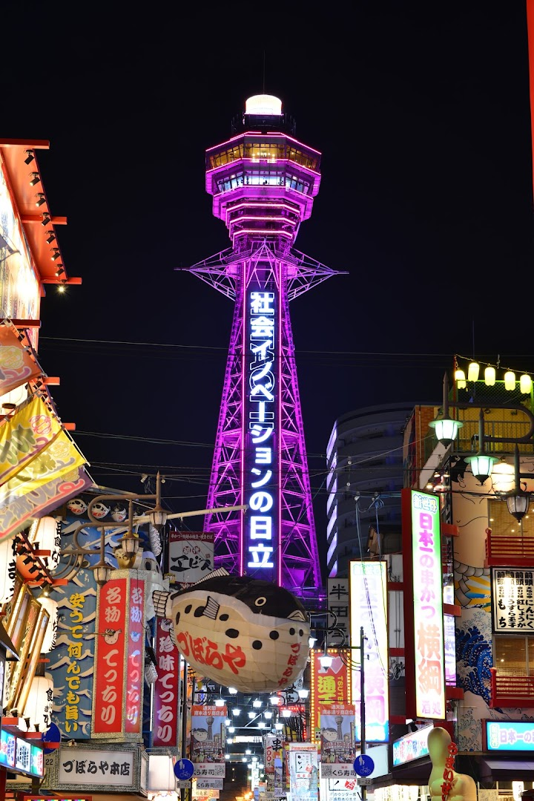

Shinsekai and Tsutenkaku Tower (suggested)
Shinsekai is a retro district famous for its neon lights and kushikatsu restaurants, centred on Tsutenkaku Tower, which has an observation deck open to the public. It has a lively, old-fashioned Osaka atmosphere.
Open in Google Maps (street view, more photos and reviews there)






Visitor tips on finding it and getting there
I spent half a day exploring the iconic Tsutenkaku Tower and the surrounding Shinsekai area. I only walked around the base of the tower and decided not to go up or try the tower slides, as the queues were quite long and I didn’t want to spend too much time waiting. The area around the tower was lively, with plenty of tourists, souvenir shops and eateries. I explored further into Shinsekai Market, where there were mainly older and more traditional shops. The atmosphere felt less hectic, and I even found a souvenir shop with cheaper prices compared to the more touristy shops outside. For lunch
We took both the tower walk and jump and the short outdoor slide, the slide extends outside the building for a brief second, a short ride but pretty cool. An iconic 103-meter-tall steel lattice tower and a defining landmark of the Shinsekai district in Osaka. Often referred to as a symbol of the city's resilience and local spirit, it offers a retro-modern atmosphere that contrasts with the sleeker skyscrapers found in other parts of Japan. Observation Decks: The "Golden Observation Platform" on the 5th floor features a shrine to Billiken, while the "Tenbo Paradise" is an open-air platform at
Place: 4/5 Experience: 2/5 Please be advised that one has to queue 5 times: 1. To buy the ticket 2. To get your ticket inspected 3. To get to the first elevator 4. To get to the second elevator 5. To come down To me, this ruined the experience. On the plus side - this gives workplaces to many people. The view from the top is impressive, but I'm not sure it's worth the wait.